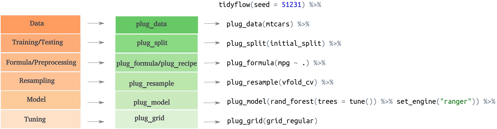
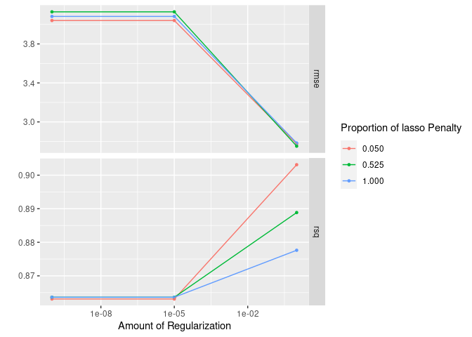

What is a tidyflow?
A tidyflow is a fork of workflows that can bundle together your data, splitting, resampling, preprocessing, modeling, and grid search. Having all these steps separated into different objects can prove to be difficult. One can predict on the testing data by mistake, forget whether the recipe has been baked or not, or simply do not remember the name of all the tuning parameters to specify in the grid. tidyflow is a package aimed at bundling all of these steps into a coherent flow, as is represented below:

Among the advantages are:
You don’t have to keep track of separate objects in your workspace.
The split, resample, recipe prepping, model fitting and grid search can be executed using a single call to
fit().
Installation
You can install the development version from GitHub with:
# install.packages("devtools")
devtools::install_github("cimentadaj/tidyflow")Example
tidyflow builds upon the work in tidymodels to create an expressive workflow for doing machine learning. Let’s suppose we want to fit a linear model to the model mpg ~ . on the training data of mtcars. We can define the split (training/testing), define our formula, define the statistical model and fit the tidyflow:
# Build tidyflow
tflow <-
mtcars %>%
tidyflow() %>%
plug_split(initial_split) %>%
plug_formula(mpg ~ .) %>%
plug_model(linear_reg() %>% set_engine("lm"))
# Fit model
fit_m <- fit(tflow)
fit_m
#> ══ Tidyflow [trained] ══════════════════════════════════════════════════════════
#> Data: 32 rows x 11 columns
#> Split: initial_split w/ default args
#> Formula: mpg ~ .
#> Resample: None
#> Grid: None
#> Model:
#> Linear Regression Model Specification (regression)
#>
#> Computational engine: lm
#>
#> ══ Results ═════════════════════════════════════════════════════════════════════
#>
#>
#> Fitted model:
#>
#> Call:
#> stats::lm(formula = ..y ~ ., data = data)
#>
#> Coefficients:
#>
#> ...
#> and 5 more lines.tidyflow will execute this order of steps: data -> split training/testing -> apply the formula and model to the training data. With this final model we can use the predict_training function to automatically predict on the training data:
# Predict on testing
fit_m %>%
predict_training()
#> # A tibble: 24 x 12
#> mpg cyl disp hp drat wt qsec vs am gear carb .pred
#> <dbl> <dbl> <dbl> <dbl> <dbl> <dbl> <dbl> <dbl> <dbl> <dbl> <dbl> <dbl>
#> 1 21 6 160 110 3.9 2.62 16.5 0 1 4 4 22.9
#> 2 22.8 4 108 93 3.85 2.32 18.6 1 1 4 1 25.4
#> 3 21.4 6 258 110 3.08 3.22 19.4 1 0 3 1 22.0
#> 4 18.7 8 360 175 3.15 3.44 17.0 0 0 3 2 18.4
#> 5 24.4 4 147. 62 3.69 3.19 20 1 0 4 2 23.0
#> 6 22.8 4 141. 95 3.92 3.15 22.9 1 0 4 2 24.1
#> 7 19.2 6 168. 123 3.92 3.44 18.3 1 0 4 4 18.6
#> 8 17.8 6 168. 123 3.92 3.44 18.9 1 0 4 4 19.1
#> 9 17.3 8 276. 180 3.07 3.73 17.6 0 0 3 3 15.2
#> 10 15.2 8 276. 180 3.07 3.78 18 0 0 3 3 15.3
#> # … with 14 more rowsSimilarly, you can use predict_testing for predicting on the testing data.
However, the usefulness of tidyflow is clearer when we perform more complex modelling. Let’s extend the previous model to include a cross-validation resample and to perform a grid search for a regularized regression:
# Grid search will be performed on the penalty and mixture arguments
regularized_mod <- linear_reg(penalty = tune(), mixture = tune()) %>% set_engine("glmnet")
# Build tidyflow
tflow <-
mtcars %>% # Start with the data
tidyflow() %>%
plug_split(initial_split) %>% # Split into training/testing
plug_formula(mpg ~ .) %>% # Define model specification
plug_resample(vfold_cv) %>% # Specify resample: cross-validation
plug_grid(grid_regular) %>% # Define type of grid search
plug_model(regularized_mod) # Define the type of model
# Fit model
fit_m <- fit(tflow)
fit_m
#> ══ Tidyflow [tuned] ════════════════════════════════════════════════════════════
#> Data: 32 rows x 11 columns
#> Split: initial_split w/ default args
#> Formula: mpg ~ .
#> Resample: vfold_cv w/ default args
#> Grid: grid_regular w/ default args
#> Model:
#> Linear Regression Model Specification (regression)
#>
#> Main Arguments:
#> penalty = tune()
#> mixture = tune()
#>
#> Computational engine: glmnet
#>
#> ══ Results ═════════════════════════════════════════════════════════════════════
#>
#> Tuning results:
#>
#> # A tibble: 5 x 4
#> splits id .metrics .notes
#> <list> <chr> <list> <list>
#> 1 <split [21/3]> Fold01 <tibble [18 × 6]> <tibble [0 × 1]>
#> 2 <split [21/3]> Fold02 <tibble [18 × 6]> <tibble [0 × 1]>
#> 3 <split [21/3]> Fold03 <tibble [18 × 6]> <tibble [0 × 1]>
#> 4 <split [21/3]> Fold04 <tibble [18 × 6]> <tibble [0 × 1]>
#> 5 <split [22/2]> Fold05 <tibble [18 × 6]> <tibble [0 × 1]>
#>
#> ... and 5 more lines.The result is not a final model as before, but rather a grid search result. We can extract that and visualize it:
# Extract tuning grid
fit_m %>%
pull_tflow_fit_tuning() %>%
autoplot()
You can finalize the tidyflow with complete_tflow which will select the best tuning parameters and train the model on the entire training data. This final model can be used for predicting on the training data and on the testing data automatically:
# Fit best model on the entire training data
final_m <-
fit_m %>%
complete_tflow(metric = "rmse")
# Predict on train
final_m %>%
predict_training()
#> # A tibble: 24 x 12
#> mpg cyl disp hp drat wt qsec vs am gear carb .pred
#> <dbl> <dbl> <dbl> <dbl> <dbl> <dbl> <dbl> <dbl> <dbl> <dbl> <dbl> <dbl>
#> 1 21 6 160 110 3.9 2.62 16.5 0 1 4 4 22.5
#> 2 21 6 160 110 3.9 2.88 17.0 0 1 4 4 22.1
#> 3 21.4 6 258 110 3.08 3.22 19.4 1 0 3 1 20.6
#> 4 18.7 8 360 175 3.15 3.44 17.0 0 0 3 2 16.6
#> 5 18.1 6 225 105 2.76 3.46 20.2 1 0 3 1 20.3
#> 6 14.3 8 360 245 3.21 3.57 15.8 0 0 3 4 14.1
#> 7 24.4 4 147. 62 3.69 3.19 20 1 0 4 2 22.7
#> 8 22.8 4 141. 95 3.92 3.15 22.9 1 0 4 2 23.4
#> 9 17.8 6 168. 123 3.92 3.44 18.9 1 0 4 4 19.6
#> 10 16.4 8 276. 180 3.07 4.07 17.4 0 0 3 3 15.3
#> # … with 14 more rows
# Predict on testing
final_m %>%
predict_testing()
#> # A tibble: 8 x 12
#> mpg cyl disp hp drat wt qsec vs am gear carb .pred
#> <dbl> <dbl> <dbl> <dbl> <dbl> <dbl> <dbl> <dbl> <dbl> <dbl> <dbl> <dbl>
#> 1 22.8 4 108 93 3.85 2.32 18.6 1 1 4 1 26.9
#> 2 19.2 6 168. 123 3.92 3.44 18.3 1 0 4 4 19.5
#> 3 14.7 8 440 230 3.23 5.34 17.4 0 0 3 4 10.7
#> 4 15.2 8 304 150 3.15 3.44 17.3 0 0 3 2 17.3
#> 5 13.3 8 350 245 3.73 3.84 15.4 0 0 3 4 14.0
#> 6 19.2 8 400 175 3.08 3.84 17.0 0 0 3 2 15.5
#> 7 27.3 4 79 66 4.08 1.94 18.9 1 1 4 1 28.4
#> 8 30.4 4 95.1 113 3.77 1.51 16.9 1 1 5 2 27.3Code of Conduct
Please note that the tidyflow project is released with a Contributor Code of Conduct. By contributing to this project, you agree to abide by its terms.